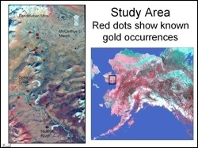
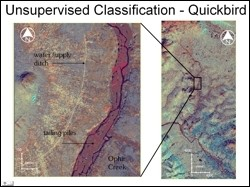
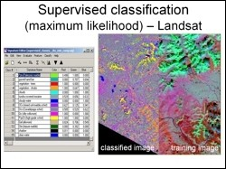

 Gold has played a major role in Alaska’s economic development beginning with the first gold rush in the late 1800’s. In 1899 in the Nome area, this translated into the production of more than $3,000,000 of gold, largely from the creeks in the near vicinity of the settlement. In the Ophir Creek study area, nearly 700,000 ounces were extracted from this drainage between 1897 and the mid-1940’s (Hudson and DeYoung, 1978).
 The objective for this project was to use digital image processing techniques to enhance Quickbird and Landsat-7 ETM+ images for improved detection of regions that may be potential sites of Au occurrence. Ratioing and IHS transformation operations were performed on the images toward that end and were then followed by supervised and unsupervised classification of the resulting images.
 Classification results on quickbird and Landsat data generated very similar results, which conformed reasonable well to the authors on field observations, though it did not reveal any new information over and above what is known in the literature. The results of this fieldwork indicated that a calcareous (and sometimes graphitic) schist and a partially metamorphosed limestone were interlayered and the bedrock brought up by the dredges operating in the 1930’s and ‘40’s was representative of this kind of assemblage.